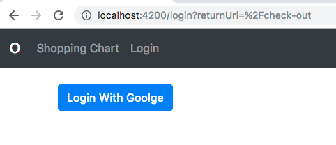

Kemampuan Akhir Yang Direncanakan
- Peserta mengetahui penggunaan localstorage pada angular
Percobaan 14 LocalStorage
pada percobaan sebelum pada saat kita belum login kita ketik localhost:4200/check-out tidak bisa dikarenakan adanya auth guard sehingga user tidak bisa sembarangan masuk ke halaman lain sebelum login
pada percobaan berikut ini kita akan mencoba mengredirect user ke halaman yang telah diketikan saat sebelum login menggunakan localstorage
langkah pertama buka file auth-guard.service.ts dan rubah beberapa code sehingga menjadi seperti berikut:
import { Observable} from 'rxjs';
import { AuthService } from './auth.service';
import { Injectable } from '@angular/core';
import { Router, RouterStateSnapshot,ActivatedRouteSnapshot,CanActivate} from '@angular/router';
import { map } from 'rxjs/operators';
@Injectable({
providedIn: 'root'
})
// @Injectable()
export class AuthGuard implements CanActivate{
constructor(private auth:AuthService,private router:Router) { }
// tambahkan parameter route,state:RouterStateSnapshot
canActivate(route,state:RouterStateSnapshot): Observable<boolean> | Promise<boolean> | boolean
{
return this.auth.user$.pipe(
map(user =>{
if (user){
return true;
}
// tambahkan Sets query parameters to the URL.
this.router.navigate(["/login"],{queryParams:{returnUrl:state.url}});
return false;
})
);
}
}
- jika benar ketik localhost:4200/check-out dengan kondosi belum login.Jika benar maka tampilannya akan seperti berikut

- buka file auth.service.ts tambahkan beberapa code sehingga keseluruhan code seperti berikut
import { Injectable } from '@angular/core';
import { AngularFireAuth } from 'angularfire2/auth';
import * as firebase from 'firebase';
import { Observable } from 'rxjs/internal/Observable';
import { ActivatedRoute } from '@angular/router';
@Injectable({
providedIn: 'root'
})
export class AuthService {
user$:Observable<firebase.User>;
//tambahkan parameter ActivedRoute
constructor(private afAuth:AngularFireAuth, private route :ActivatedRoute) {
this.user$= afAuth.authState;
}
// tambahakan property snapshot pada route dan property queryParamMap
login(){
let returnUrl=this.route.snapshot.queryParamMap.get('returnUrl')||'/';
localStorage.setItem('returnUrl',returnUrl);
this.afAuth.auth.signInWithRedirect(new firebase.auth.GoogleAuthProvider());
}
logout(){
this.afAuth.auth.signOut();
}
}
- buka file app.component.ts tambahkan code berikut pada class appcomponent
constructor(private auth:AuthService,private router:Router){
auth.user$.subscribe(user=>{
if(user){
let returnUrl = localStorage.getItem('returnUrl');
router.navigateByUrl(returnUrl);
}
})
}
- sehingga keseluruhan code app.component.ts
import { Component } from '@angular/core';
import { AuthService } from './auth.service';
import { Router } from '@angular/router';
@Component({
selector: 'app-root',
templateUrl: './app.component.html',
styleUrls: ['./app.component.css']
})
export class AppComponent {
constructor(private auth:AuthService,router:Router){
auth.user$.subscribe(user=>{
if(user){
let returnUrl = localStorage.getItem('returnUrl');
router.navigateByUrl(returnUrl);
}
})
}
}
- jika benar maka user akan diarahkan langsung kehalaman check-out setelah login dengan syarat user harus mengetik localhost:4200/check-out dengan kondisi belum login